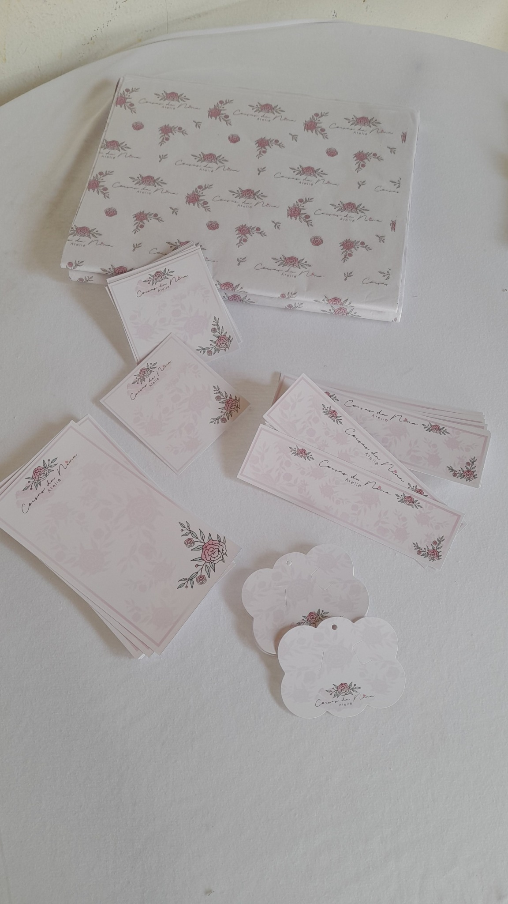

Conjunto coordenado
Papel de seda, cartões, tags e cartelas podem seguir a mesma identidade visual para criar unidade na apresentação.
Monte uma apresentação coordenada para sua marca com papel de seda, cartões, tags e cartelas personalizados. O kit ajuda a manter a identidade visual presente nos detalhes da embalagem e na entrega dos produtos.

O kit de papelaria ajuda a deixar cartões, tags, cartelas e embalagem com uma apresentação coordenada e reconhecível.
Papel de seda, cartões, tags e cartelas podem seguir a mesma identidade visual para criar unidade na apresentação.
Uma solução pensada para laçeiras que desejam organizar a comunicação da marca nos produtos, pedidos e embalagens.
Cores, logotipo, textos e informações podem ser adaptados ao estilo e à identidade visual do seu negócio.
Envie sua arte, logotipo, referência ou as informações que deseja aplicar no kit pelo WhatsApp. Confirmamos os itens, materiais, quantidades, prazo e valor antes da produção.
Envie sua referência, logotipo ou ideia e solicite um orçamento personalizado.